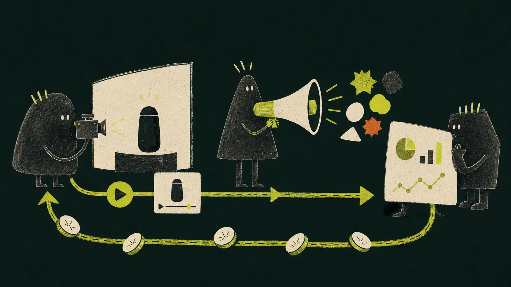
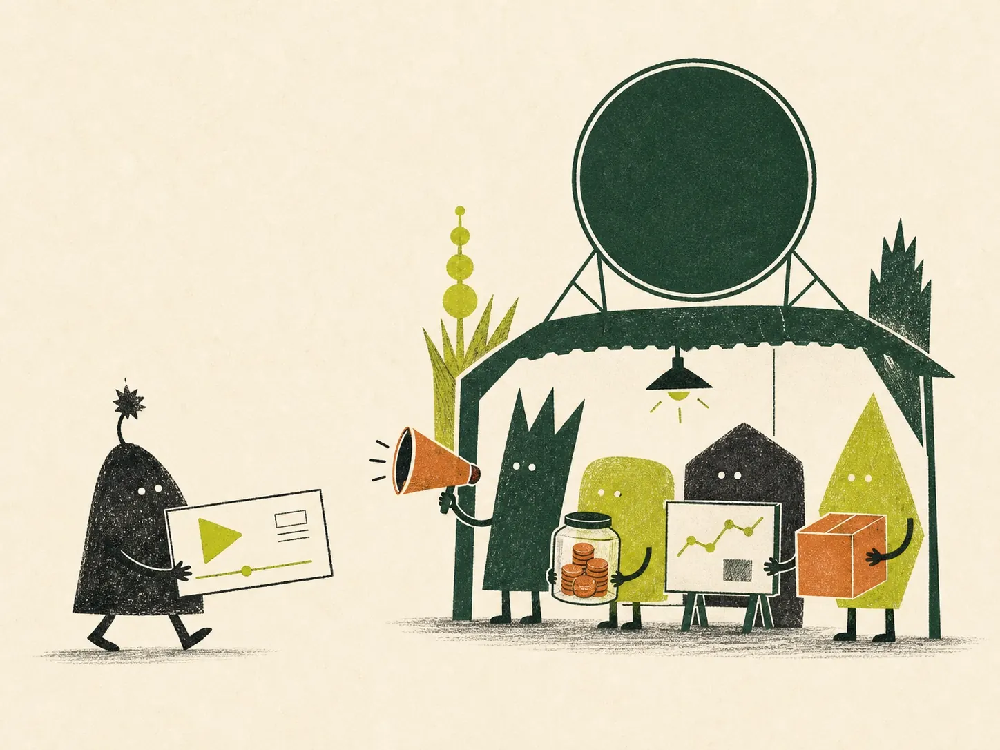

Create
Make a genuine video in your own voice.
A different way to create with ARK
You create an original video with an ARK product. If we believe it can help customers, our team may turn it into a paid advertisement. ARK pays to run the advertising. You earn commission from qualifying sales tracked to your video.

First, the simple version
Traditional UGC work usually ends after a brand pays once for one video. This partnership works differently. Your video can keep creating value after you deliver it.
ARK may test an approved video as a paid ad. Our team pays the ad platforms, builds the campaigns, tests different versions and manages the performance.
If people buy through the tracking connected to your video, your share is recorded. That means a strong video can earn more than a single one-time video fee.
Make a genuine video in your own voice.
Send the agreed video files to ARK.
ARK may select the video and fund the ads.
Earn commission from qualifying tracked sales.
Applying is only the first step. We review your work first. If selected, ARK confirms the product, exact deliverable, deadline, usage and commission terms with you before anything is shipped.
Apply to create with ARKThe complete journey
Add your social profiles and your strongest videos. We look at your style, your ideas and how you communicate—not only your follower number.
We check whether your content and audience may fit an ARK campaign. Applying does not guarantee that you will be selected.
Before shipping anything, we confirm the product, video deliverable, deadline, usage rights and commission terms. You know what is expected before you say yes.
You learn the product, make an original video and deliver the agreed files. We want your genuine creative voice—not a copy of everyone else.
If the video is approved and selected, our team may edit versions, test them and pay to show them to potential customers.
Your partner tracking can show clicks, qualifying tracked sales and the commission connected to your content. A strong video may keep working over time.
The important money question
Because you create the video, while ARK takes responsibility for the expensive marketing work that comes after it.
You create the video. ARK pays for and runs the marketing.
This is only an example to explain the calculation. It is not a promise of sales or earnings.
ARK also has a separate 15% affiliate link for people who bring their own traffic. This application is not for that program.

No mystery numbers
If your video becomes an ARK ad, tracking can connect the journey from a click to a qualifying purchase. Your partner area can show the performance connected to your content.
These names and numbers are fictional. They only show what tracking information can look like.
| Creator | Clicks | Purchases | Tracked sales | Creator 5% |
|---|---|---|---|---|
| ALAlex | 1,280 | 52 | €4,160 | €208 |
| EMEmma | 3,420 | 171 | €13,680 | €684 |
| JOJohn | 760 | 23 | €1,840 | €92 |
| Example total | 5,460 | 246 | €19,680 | €984 |
What we want to see
Give people a reason to stop and watch in the first few seconds.
Show the product naturally and help people understand why it matters.
Bring the style, humour, story or point of view that makes your work yours.
Do not invent results or promises. Clear and genuine content builds trust.
You do not need to be a professional filmmaker. Clear sound, good light and one strong idea are more useful than expensive equipment.
Before you apply
We want you to understand the partnership before you share your information.
You do not need to pay for the ads. Your part is to create and deliver the agreed video. If ARK selects it for advertising, our team pays the ad platforms and takes care of the campaign, testing and daily marketing work.
We review every delivered video carefully. It needs to fit the ARK style, show the product clearly and use claims that are true and approved. We cannot use medical promises or other claims that the product cannot support. If you are unsure what you can say, please ask your ARK contact before filming—we are happy to help you get it right. Videos that fit the campaign may then be selected and tested as ads.
If your approved video becomes an ARK ad, the tracking connected to it can record qualifying sales. Your agreed 5% share is calculated from those qualifying tracked sales. The stronger the content performs, the more value it may create over time.
First, we look at your profile and your best work. If we see a good match, we contact you and explain the product, video idea, deadline and terms. You can ask questions before you agree. A product is sent only after the collaboration is clear to both sides.
We cannot promise a specific result because every creator, video and campaign performs differently. What we can promise is a clear process: we review your work, agree the collaboration before shipping, track qualifying results and show the commission connected to them.
Ready when you are
The application asks for your profiles, best-performing content and delivery details. It does not lock you into a campaign.